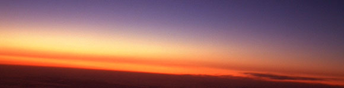

会いたかったなぁ…と。行きたかったではなく、会いたかったと口にでてしまう作品がここにあるのだけど。2年ぶりの恋人というのは、足を踏み入れるのに嬉しさと戸惑いと興奮と恐れ、もうめちゃくちゃにいろんな感情で一杯だったわけです。それだけ気持ちを乱す恋人がそこにいて、いますぐにでも抱擁してもらいたいと。そして抱擁してほしい恋人は3人もそこでまっていて、私をぎゅっと包んで離さない。 [2007TEXT]
地中美術館…「地中」という言葉だけで、私はさまざまな想像をし、展示内容云々を知る以前に、その存在に恋に近いものを感じてしまいました。…アホや…私… 昔から、高い場所と、薄暗い場所が大好きでしかたがない。
小さいころに押入れで寝かされていたせいなのか…？（夜鳴きがひどくて、オカンに押し込められた…） 「地中」という言葉には「何か」を隠している「秘密」と、そしてそれを「永遠」に保つという二つの企みが感じられて、その「永遠」に隠している「秘密」の「何か」とはなんぞやと、いてもたってもいられなかった。 そして、実際に「地中美術館」を訪れることによって、「何か」も「秘密」も「永遠」も知ることができるなんて、思ってもいなかった。
「地中美術館」には「何か」と「秘密」と「永遠」のためにある美術館だったから[2005TEXT]
◆地中美術館にはいるまで
2年ばかり間を開けている間、直島・地中美術館はメディアの露出も増えて、美術館というよりもお伊勢参りかディズニーランドというぐらいに老若男女の興味を引きつけているということは、GWや夏休みの混雑の話しを聞いて想像するのはたやすかったのだけど、なんてことのない冬の平日も団体のバスツアーが入っていて驚いた。たしかにここの作品はすべて素晴らしいからみんなに見て欲しいというのはあるけど、うーん。それでもヒミツにしておきたかった感じも。作品は相変わらずどれも素晴らしかったけど、マナー違反は多かった。静かな鑑賞は難しくなってきちゃったのかな。[2010TEXT]
チケットショップでチケット購入。2000円。 以前書いた誓約書は無くなったもよう。やはり評判悪かったのかしらん？ それと以前は可能だった再入場は不可に。 一回こっきり真剣勝負。気合と鑑賞時間に余裕が必須。
デジカメは持ち込まないでくださいとのことで、デジカメを預けて美術館へ。
チケットカウンターの左手奥にウォーターディスペンサーがあるので、お水を一杯。ベネッセゾーン内って自販機が無いからこーゆー水が飲める場所がありがたい！夏はホント重要かも。 坂をテコテコのぼりつつ美術館に向かう。
左手には「モネの庭」お花がたくさん色とりどり…なんだけど、ちょっとお花屋さんの店先状態かなぁ…もっとワイルドフラワーとかが良いのだけど。なにはともあれ外国人のお客様にはウケが良いようで「ビューティホー！」と叫ぶ異国の御仁も。睡蓮が咲き乱れる頃はさらに「ビューティホー！」なのかも。
さて…左手に見えてくる受付。 大使館の警備員詰め所とゆーか、有料駐車場受付詰め所とゆーか。ちいさい受付でチケットもぎってもらいます。 そのまま左手奥にすすんで、玄関（のような入り口）に。 代々木上原あたりにありそうなアプローチ（…というと失礼な言い方かもしれないけど、美術館ではないような、誰かの家に入るような…でも特別な家…という感じ。親近感と緊張感の狭間） 四角ヤードの砥草の絨毯。あれ？前回来たときに比べて少ぅし枯れてきてるなぁ。 懐かしさに胸がくるしい。 あー。ホント会いたかったんだなぁココに。 各部屋に向かうのが嬉しいのに、ここまで来るのにすごくときめいた時間が下り坂なのが辛い。 「恋だなぁ～」とたどりつくのが、地中ストア[2007TEXT]
◆地中ストア
書籍がすごーい増えていた。ので、目移りしましたが、結局「Chichu Art Museum」地中美術館のカタログを。。。が、これ洋書。日本の美術館なのに、カタログは洋書～。日本語のカタログが欲しい！とゆーかたには、小さな「地中ハンドブック」とゆー本があります。でも大きいカタログが欲しい～！となると洋書しかない…です。[2007TEXT]
◆まずはモネ室
その先の秘密をもらさぬようにさえ感じる小さな入り口から一歩ずつ歩みをすすめる。
ぺたりぺたり。
一歩ずつ影から光へのグラデーション。気がつけば真っ白に包み込まれ、光の中にぽっと浮かぶ睡蓮。
ため息以外になにを語ればいいのやら。
今、この文章を綴るためにそのときの記憶をたどるだけで、身体の芯をぎゅっとつかまれるような。 2年。年を取ったせいか。 前回のモネ室に対しては感覚よりも分析が多分であったのだけど、今回は感覚だけがやたらに突出して、その場の私にささやきかける。
「絵」を見ているはずなのに。 今回モネ室に3度入り（インターバルはさみつつ）閉館まぎわ、なぜかモネ室のドアが閉まっていたため独りで（係員はいたけど）鑑賞した際には恥ずかしながら泣けてしまった。 涙もろくなったとはいえ、美しさに感動するということ、そして感動できるという心を持っていること、そして「慈悲」を感じたこと。
「…あかん…」宗教にハマルとゆーのはこーゆーことなのかも… 「あー…つーか…」ここって死後の世界なんだ。
すべてから隔絶された空間。俗世から決別するため靴を脱ぎ、三途の川よろしく光のグラデーションを漕いで、目の前に広がる睡蓮。 そこには畏怖と、慈悲。そして情報過多な日常で鈍感になった感覚をリセットさせてくれるような。[2007TEXT]
直島に行く5ヶ月ほどまえにパリ・オランジュリーのモネを見に。直島を超える展示を想像していたのだけど、やはりこの地中美術館のモネは異常だということがわかった。「異常」という書き方はどうかという気もするけれども、鑑賞を越えた体験をここではできる。…絵画鑑賞というスタイルの異常事態。
今回は団体さんが多くてなかなかひとりで鑑賞できるチャンスがなかったのだけど、それでも閉館間際になってゆっくりと見つめ合うことができた。閉館も近くなると室内は薄暗くなりつつあってさらに睡蓮の咲く池のほとりの柳の下にいるような。音はもちろん、吐息すら反響してくるような緊張感。
ぜいぜいと揺さぶられる感情で息を荒くなるのだけど、そんな気持ちすべてを愛おしく包んでくれるまっしろな空間。
モネの睡蓮と白い空間。そしてなにかもうひとつ。気配というものは作られるものなのだろうか？感じざるを得ない愛しいものに対する感情。来るたびにこのモネ室への思いは深まっている。[2010TEXT]
◆それからタレル室
入るまえから気になっていた。 「ブー！」 2年まえ、オープンフィールドでは「ピンポーンピンポーン！」というアラート音だったのだけど、どうも「ブー！」になってしまったらしい。
えーっと、鳴らさないが前提なので、いいのですが…。
みんな必ず鳴らす！ …とゆーか鳴らすまでが作品になってしまっているような気がするのは私だけでしょーか？
なにはともあれオープンフィールドは面白い。 黒い階段の先に真っ青なスクリーン。そこに飛び込む 平面に感じていたものに空間を感じる瞬間。 南寺で、うっすらと目の前に見えたスクリーンに手を伸ばしたときの衝撃。 その感覚の延長といえばいいだろうか（…といっても南寺を体験してない方にはわかりにくいですね…ごめんなさい） そして先が掴めない感覚。 どこまであるのか？ …実は聞いちゃったのです。
「ブー！ってブザーなりますけど、落ちちゃったヒトいます～？」 「…い…いるんです」 「ええええええ！最近ですかぁ？」 「いえ、昔のようですが…」 「ひやー！どれぐらい深いんですか？（←これが一番知りたかった！）」 「それが非公開なんです。。。私たちもしらないんですよ」 「そ…そうですか…ありがとう…」
うーんますます未知！
にしてもです。 にしても今回意外にも楽しかったのが次の部屋、「オープンスカイ」。 実は今回もナイトプログラムを楽しむことができなかったのですが それでもオープンスカイは良かった！ なにが良かったかとゆーと… 邪道とか言われそうですが…椅子があったかいのです。。。 オープンスカイはサウナルームのような感じで四角いスペースに入り口を除いてぐるっと腰掛状の段差があるのだけど、それが床暖房で暖かいのです。
年末の寒い日だったせいか、地中美術館で寛げるスペースが少ないせいか、みんなここに集まって上を見上げているのです。
なんかみんなでかまくらに入っているよーな。ひとつのコタツにみんなが足を突っ込んでテレビを見ているよーな。 あー！真ん中にみかん置きたい！
にしてもみんなで同じものを見上げるというのは楽しい。 それも空。 きっとみんな思い思い違うものを見上げて、感じて、それを家に持ち帰るのだろうなぁ。 もう二度と会うことが無いかもしれないヒトたちかもしれないけど、そのとき確かに狭い空間で同じものを見上げていたという一瞬の共有時間。[2007TEXT]
◆ようやく会えたデ・マリア室
夢にまで見たデ・マリア室。小さな入り口から広がる大空間にやっぱり今回も息を飲んだ。 待っていてくれた大きな球体。 静かに なにひとつ変わらず。 私の胸の中で2年間溜めていた気持ちとシンクロする瞬間。 何度この空間を想像しただろう？この対峙する時を想像しただろうか。 変わらずにここにある。 それが意味であり、その意味は私自身に、この時に、そしてこの場所にすべてに宿っている。 けれども、そのいずれにも意味はなく きっかけにすぎない。 しかし…前回噂で聞いて、旧「直島観光」でもネタにしたドラムの音がしない。 階段の下で耳に手を当てて音を聞き取ろうとしているヒトがいる…でも音はしない… 「まさかガセだったのか？あのネタは？？？？？」と不安でドキドキしつつ。 万が一音がした場合聞き逃してはいかんと、音を立てぬよう階段を降りてスタッフに声をかける。 「音がするって聞いているんですが…（どきどき…）」 「そうですね、ドラムの音というか、重い荷物を落とすような音が1～2時間に1、2度鳴りますよ」 ほ やっぱりなるんだー！ 「いつなりました？」 「さっきなりましたよ。たぶん、この部屋にいらっしゃいましたよ」と私を指す。 えええええええええ 記憶をたどっても自分の足音しか聞こえない。 さっき鳴った…っつーことはあと1～2時間後かぁぁぁ 階段下で耳に手を添えていたヒトたちも、あきらめて出て行った。 うううん～… と未練がましく階段下で天井を見上げていたら… ドゥン…… あ！っと思いさっき尋ねたスタッフに目をやると大きくうなずいてくれる。 これかぁぁぁ！！！ たしかにこれは… わかりづらいかも… どんな音かとゆーとですね。。 スタッフが教えてくれた重い荷物を落とす音、大きな和太鼓（低い音）、そうそう、地中カフェのテーブルに肘を突くような音。 地中カフェに行ったとき、「あ！」と思いましたよ。[2007TEXT]
◆地中カフェ
団体さんやらでごった返す中から逃げて地中カフェ。
前回のスプマンテ×プラチナハムを目当てに来たのだけど、残念ながらメニューが…違う！
ハムはありません。ハムは…あああ
経営が変わったのかな？まだメツゲライクスダがさほどメジャーではないときにわざわざそこのハムを使っていたぐらいこだわりがあったのにな。
しかたがないのでスプマンテ「サンテノのピノ・シャルドネ」ピッコロサイズをもって外のテラスに。右手のほうに下へ降りる階段があるのでとことこと降りていくと！絶景！
しかも貸し切りの空間！ああーハムは無いけどまぁいいやぁーとすべてを許すロケーション。
ふと横を見ると山椒の木。山椒の実が生っているいるので、何粒かつまんでスプマンテのあてに。おっ！これはなかなか良い感じ！まもなく日が傾く頃合い。椅子を二つ使って足を椅子に乗せて、瀬戸内海を抱え込むようなこの場所で幸せを噛みしめる。山椒とスプマンテ。[2010TEXT]
というわけで地中カフェ 今回の大収穫は地中カフェ。 んもう行くべし行くべし！！！！！ さらっとまずはすべての部屋を回り、地中カフェへ。 私が頼んだのは「スプマンテ」と「プラチナハム」んもうたまらんです！ スプマンテはサンテノのピノ・シャルドネ そしてプラチナハム。うすく花弁のように切られたハム。 脂身のマーブル具合も絶妙で、うっとり… それに粒マスタードが粒粒なのです！つぶつぶ！ えーと粒マスタードとゆーと、粒をつぶしたマスタードが一般的なのですが、 粒丸ごとなのです。んまー！！！！！ クールダウンすべく海を見ながらワインやスパークリングワインを飲みながらハム。 これ以上の幸せはどこに！というほどですよ。 この日は風が強くて寒かったから外にはちらりとしか出られなかったのだけど、 できれば外でスプマンテ＆プラチナハムが幸せかも。 お座布団も用意してありました。 ちなみに、地中カフェの上階は福武氏のお部屋とのこと。呼んでください福武さん。 にしても…本当にここでのクールダウンは幸せでしたわ。 大好きな人とここで作品の話をしながらスプマンテなんか飲めたらもう気絶ものですね。 ちなみにこのプラチナハムはメツゲライクスダです。 あまりにも美味しすぎて名刺を頂いてしまいました。 でも、テイクアウトができないのが残念…お持ち帰りして食べたかったなぁ。。。[2007TEXT]※当時とメニューが変わってます。